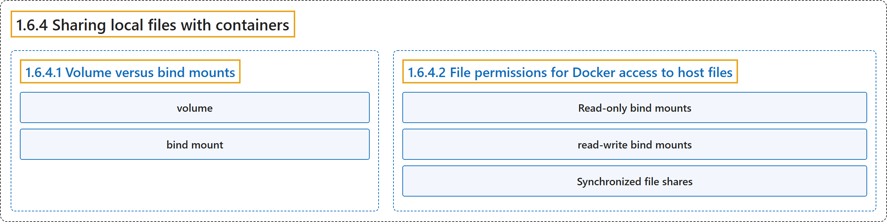

1.6.4 Sharing local files with containers
Classification

Glossary
| Term | Definition | 中文翻译 | Source |
|---|---|---|---|
| 1.6.4 Sharing local files with containers 与容器共享本地文件 |
(context) "Docker offers two primary storage options for persisting data and sharing files between the host machine and containers: volumes and bind mounts." | （语境）Docker 提供两种主要的存储方式，用于持久保存数据以及在主机和容器之间共享文件：卷和绑定挂载。 | Docker Inc., n.d., "Explanation", para. 3 |
| 1.6.4.1 Volume versus bind mounts 卷与绑定挂载 |
(No definition) | （无定义） | Docker Inc., n.d., "Volume versus bind mounts" |
| volume 卷 |
"If you want to ensure that data generated or modified inside the container persists even after the container stops running, you would opt for a volume." | 如果你想确保容器内生成或修改的数据保留到容器停止运行之后，就选用卷。 | Docker Inc., n.d., "Volume versus bind mounts", para. 1 |
| bind mount 绑定挂载 |
"If you have specific files or directories on your host system that you want to directly share with your container, like configuration files or development code, then you would use a bind mount." | 如果你有主机系统上的特定文件或目录，想要直接与容器共享，例如配置文件或开发代码，就使用绑定挂载。 | Docker Inc., n.d., "Volume versus bind mounts", para. 2 |
| 1.6.4.2 File permissions for Docker access to host files Docker 访问主机文件的权限 |
"When using bind mounts, it's crucial to ensure that Docker has the necessary permissions to access the host directory." | 使用绑定挂载时，关键是确保 Docker 拥有所需的权限来访问主机目录。 | Docker Inc., n.d., "File permissions for Docker access to host files", para. 1 |
| Read-only bind mounts 只读绑定挂载 |
"Read-only bind mounts let the container access the mounted files on the host for reading, but it can't change or delete the files." | 只读绑定挂载让容器可以读取主机上挂载的文件，但不能修改或删除这些文件。 | Docker Inc., n.d., "File permissions for Docker access to host files", para. 2 |
| read-write bind mounts 读写绑定挂载 |
"With read-write bind mounts, containers can modify or delete mounted files, and these changes or deletions will also be reflected on the host system." | 使用读写绑定挂载时，容器可以修改或删除挂载的文件，这些修改或删除也会反映到主机系统上。 | Docker Inc., n.d., "File permissions for Docker access to host files", para. 2 |
| Synchronized file shares 同步文件共享 |
"Synchronized file shares improve bind mount performance by leveraging synchronized filesystem caches." | 同步文件共享提升绑定挂载的性能，方法是利用同步的文件系统缓存。 | Docker Inc., n.d., "File permissions for Docker access to host files", para. 4 |
References
Docker Inc. (n.d.). Sharing local files with containers. Docker Docs. Retrieved October 31, 2026, from https://docs.docker.com/get-started/docker-concepts/running-containers/sharing-local-files/